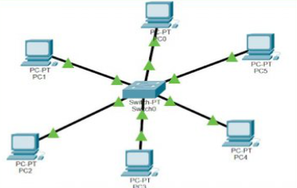

Feladatok:
Határidő: a megadottak szerint
Feltölteni: A GD oktatási portálra
Az eredményes feladat megoldáshoz kitartó munkára és elszántságra van szükség! Lazsálni tilos!
Projekt megvalósításáhozz két emberre van szükség, egy nem képes jól megoldani a teljes feladatot.
Ezen a képen egy Cisco Packet tracer látható
